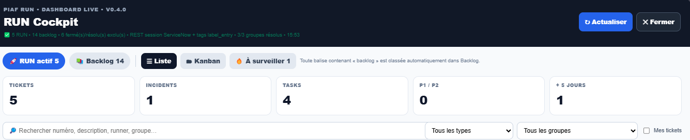

Simplifier les vues
Filtres de statut, distinction du backlog et accès plus rapide aux tickets actifs.
Un prototype d'interface complémentaire pour mieux lire les tickets, retrouver le contexte et simplifier le travail quotidien.

Les outils ITSM sont indispensables pour tracer les incidents, mais leur interface peut ralentir des tâches simples : consulter un historique, distinguer le backlog, préparer une réponse ou filtrer un ensemble de tickets.
Imaginer une expérience plus directe pour les runners, sans remplacer le système officiel de ticketing ni perdre la traçabilité.
Filtres de statut, distinction du backlog et accès plus rapide aux tickets actifs.
Lecture de l’historique et accès aux éléments utiles au diagnostic.
Aide à la rédaction de réponses et traduction lorsque nécessaire.
Pistes d’analyse des tickets clôturés pour identifier des tendances.
Prototype de cockpit avec filtres, lecture de l'historique et pistes d'aide aux réponses. Aucun gain de productivité chiffré n'a été validé.
Chiffres issus des bilans partagés. Leur périmètre et les autorisations de diffusion doivent être vérifiés avant publication publique.
Le bon outil est celui qui respecte le système de référence tout en supprimant les frictions de l'utilisateur. PIAF est présenté comme prototype ; aucun gain de productivité chiffré n'est revendiqué.